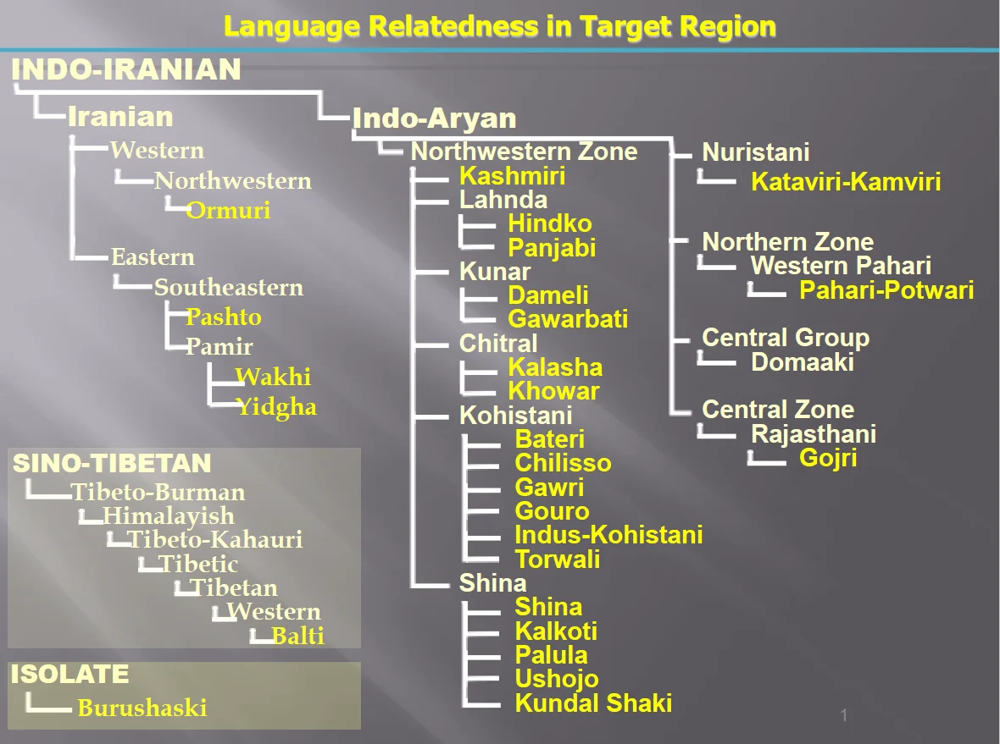

Language Relatedness in Target Region
Genetic taxonomic diagram and Swadesh comparative cognate vocabulary matrix published by the Forum for Language Initiatives. Illustrates the genetic divergence between Indo-Aryan (Dardic, Kunar, Chitral, Kohistani, Shina), Iranian (Eastern & Pamir), Sino-Tibetan (Balti), and the Language Isolate (Burushaski).
Classification Hierarchy in Northern Pakistan


Comparative Swadesh Lexicon Across Target Languages
Examining cognates across Dardic languages (Gawri, Torwali, Palula, Khowar, Shina) and the non-related isolate (Burushaski):
| Gloss (Meaning) | Gawri (Swat Kohistan) | Torwali (Swat) | Palula (Chitral) | Khowar (Chitral) | Shina (Gilgit) | Burushaski (Isolate) |
|---|---|---|---|---|---|---|
| One (1) | yak / yek | ek | aak | iwi / yak | ek | hin / hen |
| Two (2) | du | du | dúu | jhu | du | altan / alto |
| Water | wiy / woy | ci | wíi | uch | wei | čil |
| Eye | içi | açi | ačhíi | ghench | ačhí | elči |
| Fire | angār | angār | angā́ar | anğár | agár | phu |
| Sun | sūr | sūri | súuri | yorm | suri | sa |
Special Unicode Glyphs Engineered by FLI
Because northern languages possess retroflex fricatives and affricates absent in Arabic and Urdu, FLI standardized these letters for Unicode and mobile keyboards:
Used for voiceless retroflex affricate [ʈ͡ʂ] in Gawri, Torwali, Palula.
Used for voiced retroflex affricate [ɖ͡ʐ] in Kohistani languages.
Used for voiceless retroflex fricative [ʂ] in Shina and Gawri.
Used for voiced retroflex fricative [ʐ] in Burushaski and Khowar.